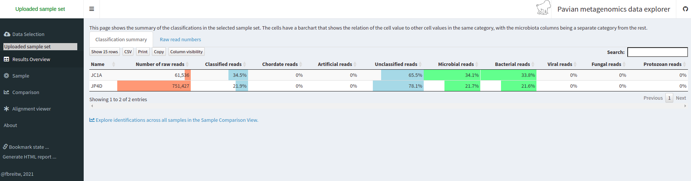

16 Asignación taxonómica
16.0.1 ¿Qué es la asignación taxonómica?
Una asignación taxonómica es un proceso que consiste en asignar una Unidad Taxonómica Operativa (OTU, es decir, grupos de individuos relacionados) a secuencias que pueden ser lecturas o contigs. Las secuencias se comparan con una base de datos construida a partir de genomas completos. Cuando una secuencia encuentra una coincidencia suficientemente buena en la base de datos, se asigna a la OTU correspondiente.
16.0.2 Estrategias para la asignación taxonómica
Existen muchos programas para realizar mapeo taxonómico, y casi todos ellos siguen una de las siguientes estrategias:
BLAST: Utilizando BLAST o DIAMOND, estos mapeadores buscan la coincidencia más probable para cada secuencia dentro de una base de datos de genomas. Esta estrategia es lenta.
Marcadores: Buscan marcadores de una base de datos realizada a priori en las secuencias a clasificar y les asignan la taxonomía en función de los hits obtenidos.
K-meros: Una base de datos genómica se divide en fragmentos de longitud k para poder buscar fragmentos únicos por grupo taxonómico, desde el ancestro común más antiguo (LCA), pasando por el phyllum hasta la especie.
16.0.3 Sesgo de abundancia
Al realizar la asignación taxonómica de metagenomas, un resultado clave es la abundancia de cada taxón u OTU en la muestra. La abundancia absoluta de un taxón es el número de secuencias (lecturas o contigs, según el método) asignadas. Además, su abundancia relativa es la proporción de secuencias asignadas. Es fundamental tener en cuenta los numerosos sesgos que pueden distorsionar las abundancias a lo largo del proceso metagenómico, como se muestra en la figura, y que, debido a ellos, es posible que no obtengamos la abundancia real de los organismos en la muestra.
16.1 Usando Kraken 2
Kraken 2 es la versión más nueva de Kraken, un sistema de clasificación taxonómica que utiliza coincidencias exactas de k-mer para lograr una alta precisión y velocidades de clasificación rápidas. kraken2ya está instalado en el entorno de metagenómica , echemos un vistazo a kraken2la ayuda.
$ kraken2 --help Need to specify input filenames! Usage: kraken2 [options] <filename(s)> Options: --db NAME Name for Kraken 2 DB (default: none) --threads NUM Number of threads (default: 1) --quick Quick operation (use first hit or hits) --unclassified-out FILENAME Print unclassified sequences to filename --classified-out FILENAME Print classified sequences to filename --output FILENAME Print output to filename (default: stdout); "-" will suppress normal output --confidence FLOAT Confidence score threshold (default: 0.0); must be in [0, 1]. --minimum-base-quality NUM Minimum base quality used in classification (def: 0, only effective with FASTQ input). --report FILENAME Print a report with aggregate counts/clade to file --use-mpa-style With --report, format report output like Kraken 1's kraken-mpa-report --report-zero-counts With --report, report counts for ALL taxa, even if counts are zero --report-minimizer-data With --report, report minimizer, and distinct minimizer count information in addition to normal Kraken report --memory-mapping Avoids loading database into RAM --paired The filenames provided have paired-end reads --use-names Print scientific names instead of just taxids --gzip-compressed Input files are compressed with gzip --bzip2-compressed Input files are compressed with bzip2 --minimum-hit-groups NUM Minimum number of hit groups (overlapping k-mers sharing the same minimizer) needed to make a call (default: 2) --help Print this message --version Print version information If none of the *-compressed flags are specified, and the filename provided is a regular file, automatic format detection is attempted. En la ayuda, vemos que, además de nuestros archivos de entrada, también necesitamos una base de datos para compararlos. La base de datos que utilice determinará el resultado que obtenga. Imagine que busca un linaje recientemente descubierto que no forma parte de las bases de datos disponibles. ¿Lo encontraría?
Existen varias bases de datos compatibles para ser utilizadas con kraken2 en el proceso de asignación taxonómica.
Desafortunadamente, incluso la base de datos más pequeña de Kraken, Minikraken, que requiere 8 GB de RAM libre, no es lo suficientemente pequeña para las máquinas que usamos, por lo que no podremos ejecutarlakraken2 . Podemos comprobar nuestra RAM disponible con free -hpara asegurarnos.
$ free -h total used free shared buff/cache available Mem: 3.9G 272M 3.3G 48M 251M 3.3G Swap: 0B 0B 0B 16.1.1 Asignación taxonómica de lecturas metagenómicas
Como hemos aprendido, las asignaciones taxonómicas pueden intentarse antes del ensamblaje. En este caso, usaríamos archivos FASTQ como entrada, que serían JP4D_R1.trim.fastq.gzy JP4D_R2.trim.fastq.gz. Y las salidas serían dos archivos: el informe JP4D.reporty el archivo Kraken JP4D.kraken.
Para ejecutar kraken2, usaríamos un comando como este:
No es necesario ejecutar esto
$ mkdir TAXONOMY_READS $ kraken2 --db kraken-db --threads 8 --paired JP4D_R1.trim.fastq.gz JP4D_R2.trim.fastq.gz --output TAXONOMY_READS/JP4D.kraken --report TAXONOMY_READS/JP4D.report Como no podemos ejecutarlo kraken2aquí, precalculamos sus resultados en un servidor, es decir, en una máquina más potente. En el servidor, ejecutamos kraken2y obtuvimos [ JP4D-kraken.krakeny] JP4D.report.
Veamos las salidas precalculadas kraken2para nuestras lecturas JP4D.
head ~/dc_workshop/taxonomy/JP4D.kraken U MISEQ-LAB244-W7:156:000000000-A80CV:1:1101:19691:2037 0 250|251 0:216 |:| 0:217 U MISEQ-LAB244-W7:156:000000000-A80CV:1:1101:14127:2052 0 250|238 0:216 |:| 0:204 U MISEQ-LAB244-W7:156:000000000-A80CV:1:1101:14766:2063 0 251|251 0:217 |:| 0:217 C MISEQ-LAB244-W7:156:000000000-A80CV:1:1101:15697:2078 2219696 250|120 0:28 350054:5 1224:2 0:1 2:5 0:77 2219696:5 0:93 |:| 379:4 0:82 U MISEQ-LAB244-W7:156:000000000-A80CV:1:1101:15529:2080 0 250|149 0:216 |:| 0:115 U MISEQ-LAB244-W7:156:000000000-A80CV:1:1101:14172:2086 0 251|250 0:217 |:| 0:216 U MISEQ-LAB244-W7:156:000000000-A80CV:1:1101:17552:2088 0 251|249 0:217 |:| 0:215 U MISEQ-LAB244-W7:156:000000000-A80CV:1:1101:14217:2104 0 251|227 0:217 |:| 0:193 C MISEQ-LAB244-W7:156:000000000-A80CV:1:1101:15110:2108 2109625 136|169 0:51 31989:5 2109625:7 0:39 |:| 0:5 74033:2 31989:5 1077935:1 31989:7 0:7 60890:2 0:105 2109625:1 C MISEQ-LAB244-W7:156:000000000-A80CV:1:1101:19558:2111 119045 251|133 0:18 1224:9 2:5 119045:4 0:181 |:| 0:99 Esta información podría necesitar aclaración. Consultemos nuestra hoja de referencia para comprender algunos de sus componentes:
| Ejemplo de columna | Descripción |
|---|---|
| do | Clasificado o no clasificado |
| MISEQ-LAB244-W7:156:000000000-A80CV:1:1101:15697:2078 | Encabezado FASTA de la secuencia |
| 2219696 | Identificación fiscal |
| 250:120 | Longitud de lectura |
| 0:28 350054:5 1224:2 0:1 2:5 0:77 2219696:5 0:93 379:4 0:82 | Los kmers coinciden con un ID taxonómico , p. ej., el ID fiscal 350054 tiene cinco coincidencias, el ID fiscal 1224 tiene dos coincidencias, etc. |
El archivo Kraken podría ser más legible. Analicemos el archivo del informe:
head ~/dc_workshop/taxonomy/JP4D.report 78.13 587119 587119 U 0 unclassified 21.87 164308 1166 R 1 root 21.64 162584 0 R1 131567 cellular organisms 21.64 162584 3225 D 2 Bacteria 18.21 136871 3411 P 1224 Proteobacteria 14.21 106746 3663 C 28211 Alphaproteobacteria 7.71 57950 21 O 204455 Rhodobacterales 7.66 57527 6551 F 31989 Rhodobacteraceae 1.23 9235 420 G 1060 Rhodobacter 0.76 5733 4446 S 1063 Rhodobacter sphaeroides | Ejemplo de columna | Descripción |
|---|---|
| 78.13 | Porcentaje de lecturas cubiertas por el clado enraizado en este taxón |
| 587119 | Número de lecturas cubiertas por el clado enraizado en este taxón |
| 587119 | Número de lecturas asignadas directamente a este taxón |
| Tú | Un código de rango que indica (Sin)clasificar, (Dominio), (Reino), (Filo), (Clase), (Orden), (Familia), (Género) o (Especie. Todos los demás rangos se indican simplemente con ‘-’. |
| 0 | Identificación de taxonomía del NCBI |
| sin clasificar | Nombre científico con sangría |
16.1.2 Asignación taxonómica de los contigs de un MAG
Ahora tenemos la identidad taxonómica de las lecturas de todo el metagenoma, pero necesitamos saber a qué taxón corresponden nuestros MAG. Para ello, debemos realizar la asignación taxonómica con sus contigs en lugar de sus lecturas, ya que no disponemos de las lecturas correspondientes a un MAG separadas de las lecturas de toda la muestra.
Para esto, kraken2es un poco diferente; aquí podemos ver el comando para el JP4D.001.fastaMAG:
No es necesario ejecutar esto
$ mkdir TAXONOMY_MAG $ kraken2 --db kraken-db --threads 12 -input JP4D.001.fasta --output TAXONOMY_MAG/JP4D.001.kraken --report TAXONOMY_MAG/JP4D.001.report Los resultados de esto se calculan previamente en el ~/dc_workshop/taxonomy/mags_taxonomy/directorio.
$ cd ~/dc_workshop/taxonomy/mags_taxonomy $ ls JP4D.001.kraken JP4D.001.report more ~/dc_workshop/taxonomy/mags_taxonomy/JP4D.001.report 50.96 955 955 U 0 unclassified 49.04 919 1 R 1 root 48.83 915 0 R1 131567 cellular organisms 48.83 915 16 D 2 Bacteria 44.40 832 52 P 1224 Proteobacteria 19.37 363 16 C 28216 Betaproteobacteria 16.22 304 17 O 80840 Burkholderiales 5.66 106 12 F 506 Alcaligenaceae 2.72 51 3 G 517 Bordetella 1.12 21 21 S 2163011 Bordetella sp. HZ20 . . . Al examinar el informe, observamos que la mitad de los contigs no están clasificados y que a una pequeña proporción se les ha asignado una OTU. Este resultado es extraño, ya que esperábamos encontrar solo un genoma en el bin.
Para ejemplificar cómo debería ser un informe de un MAG completo y no contaminado, veamos el informe de este MAG de otro estudio:
100.00 108 0 R 1 root 100.00 108 0 R1 131567 cellular organisms 100.00 108 0 D 2 Bacteria 100.00 108 0 P 1224 Proteobacteria 100.00 108 0 C 28211 Alphaproteobacteria 100.00 108 0 O 356 Rhizobiales 100.00 108 0 F 41294 Bradyrhizobiaceae 100.00 108 0 G 374 Bradyrhizobium 100.00 108 108 S 2057741 Bradyrhizobium sp. SK17 16.2 Visualización de los resultados de la asignación taxonómica
Tras asignar la taxonomía, a continuación se presenta una visualización de nuestros resultados. Krona es un software de visualización de datos jerárquico. Krona permite explorar los datos con zoom y gráficos circulares multicapa, y es compatible con diversas herramientas bioinformáticas y formatos de datos sin procesar. Para usar Krona en nuestros resultados, primero accedamos a nuestro directorio de taxonomía, que contiene los resultados precalculados de Kraken.
16.2.1 Corona
Con Krona, exploraremos la taxonomía del JP4D.001 MAG.
$ cd ~/dc_workshop/taxonomy/mags_taxonomy Krona se llama con el ktImportTaxonomycomando que requiere un archivo de entrada y uno de salida.
En nuestro caso, crearemos el archivo de entrada con las columnas tres y cuatro del JP4D.001.krakenarchivo.
$ cut -f2,3 JP4D.001.kraken > JP4D.001.krona.input Ahora llamamos a Krona en nuestro JP4D.001.krona.inputarchivo y guardamos los resultados en formato JP4D.001.krona.out.html.
$ ktImportTaxonomy JP4D.001.krona.input -o JP4D.001.krona.out.html Loading taxonomy... Importing JP4D.001.krona.input... [ WARNING ] The following taxonomy IDs were not found in the local database and were set to root (if they were recently added to NCBI, use updateTaxonomy.sh to update the local database): 1804984 2109625 2259134 Y finalmente, abra otra terminal en su computadora local, descargue la salida de Krona y ábrala en un navegador.
$ scp dcuser@ec2-3-235-238-92.compute-1.amazonaws.com:~/dc_workshop/taxonomy/JP4D.001.krona.out.html . Verás una página como ésta:

16.2.2 Pavía
Pavian es otra herramienta de visualización que permite comparar múltiples muestras. Pavian debe instalarse localmente y requiere R y Shiny, pero podemos probar el sitio web de demostración de Pavian para visualizar nuestros resultados.
Primero, necesitamos descargar los archivos necesarios como entrada en Pavian; en esta ocasión, visualizaremos la asignación de las lecturas de ambas muestras: JC1A.reporty JP4D.report.
Estos archivos corresponden a nuestros informes de Kraken. De nuevo en nuestra máquina local, usemos el scpcomando.
$ scp dcuser@ec2-3-235-238-92.compute-1.amazonaws.com:~/dc_workshop/taxonomy/*report . Accedemos al sitio web de demostración de Pavian , hacemos clic en “Explorar” y seleccionamos nuestros informes. Debe seleccionar ambos informes a la vez.


16.3 
16.4 
16.4.1 Lecturas no clasificadas
Como puede ver, un porcentaje de nuestros datos no pudo asignarse a una OTU específica.
¿Qué factores pueden afectar la asignación taxonómica para que una lectura no se clasifique?
Las lecturas no clasificadas pueden ser el resultado de diferentes factores que pueden ir desde errores de secuenciación hasta problemas con el algoritmo que se utiliza para generar el resultado. Las plataformas de secuenciación de próxima generación (NGS) ampliamente utilizadas mostraron una tasa de error promedio de 0,24 ± 0,06 % por base . Además del error de secuenciación, debemos considerar el estado de la base de datos que se utiliza para realizar la asignación taxonómica.
Todos los genomas caracterizados obtenidos por diferentes grupos de investigación se encuentran dispersos en diferentes repositorios, páginas y bancos en la nube. Algunos aún no se han publicado. Las bases de datos incompletas pueden afectar el rendimiento de la asignación taxonómica. Imagine que la OTU dominante en su muestra pertenece a un linaje que nunca se ha caracterizado y no tiene un genoma público disponible para ser utilizado como plantilla para la base de datos. Esta posibilidad hace que la asignación sea una tarea imposible y puede promover la generación de falsos positivos porque el algoritmo asignará una identidad diferente a todas esas lecturas.